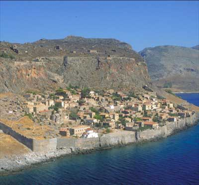

Μεσαιωνική καστροπολιτεία Μονεμβασίας
 “Μινώα ¶κρα” ονομαζόταν στην αρχαιότητα ο απόκρημνος βράχος στον οποίο είναι χτισμένη σήμερα η πόλη, ενώ έλαβε το όνομα Μονεμβασία, επειδή η πρόσβαση στο κάστρο γινόταν από ένα μόνο σημείο (μόνη έμβασις). Η είσοδος στην κάτω πόλη, μέσα από την καμαροσκέπαστη Μεγάλη Πύλη –κατασκευή των Ενετών– οδηγεί στον οικισμό με τα στριμωγμένα το ένα πάνω στο άλλο σπιτάκια και τα στενά δρομάκια που καταλήγουν σε θολωτές στοές. Η Πάνω Πόλη, ακατοίκητη σήμερα, είχε τη δική της οχύρωση. Τρία χρόνια πολιορκούσε την πόλη ο Γουλιέλμος Βιλεαρδουίνος, ηγεμόνας του Πριγκιπάτου της Αχαΐας, μέχρι να αναγκάσει τους κατοίκους να παραδοθούν λόγω πείνας (1246-1249). Από τότε μέχρι την επανάσταση του 1821 πέρασε διαδοχικά από Βυζαντινούς, Τούρκους και Ενετούς. Σήμερα ξελογιάζει τους επισκέπτες, που μπορούν να φιλοξενηθούν στα τουριστικά αξιοποιημένα κελιά του κάστρου και να αφήσουν τη φαντασία τους να τους ταξιδέψει στα χρόνια των πειρατών και των κουρσάρων. | ||